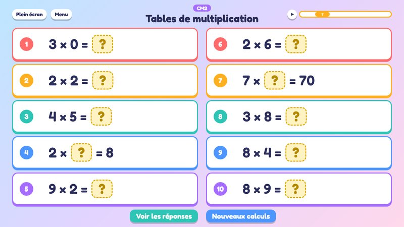
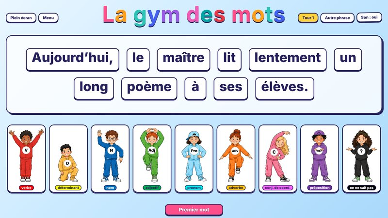
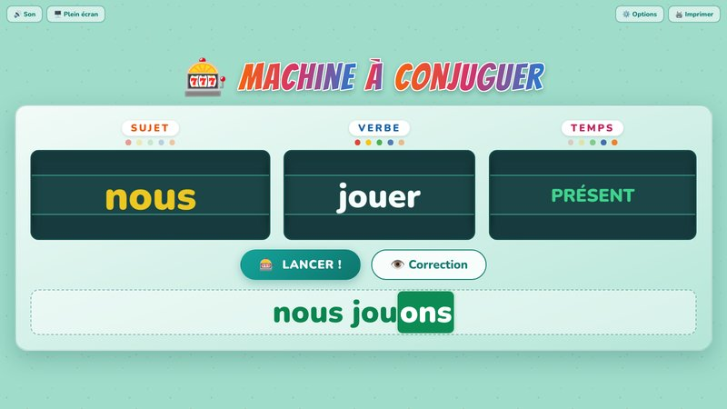
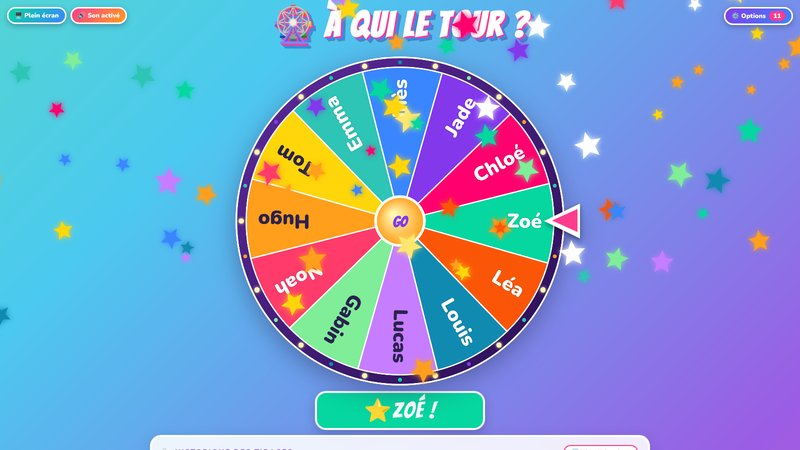

Calcul mental

La gym des mots

Machine à conjuguer

À qui le tour ?




Pour utiliser les outils en classe, installe l'application.
Elle fonctionnera même sans internet et se mettra à jour toute seule.